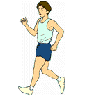

|  | & Out West |
Johnny West and his best friend, Ernesto, are participating in a walk-a-thon event, to raise funds for a charity in their home town.The organizers decide to try something new and different. The participants are to be divided into 2 groups that will walk in opposite directions, one toward the east, the other toward the west.
At 9:05 a.m. Ernesto's group started out, going east. He was walking at a speed of 220 yd per minute.
Then at 9:15, Johnny's group began walking westward, of course. But he was walking at a pace that was 10% faster than his friend.
At what time, to the nearest minute, will the two friends be 15 miles apart?
Extra: The boys walked different distances. Who walked farther? What was the difference?
| Comments? Send e-mail. | Back to top | Go back to Home Page | Go back to Contents |